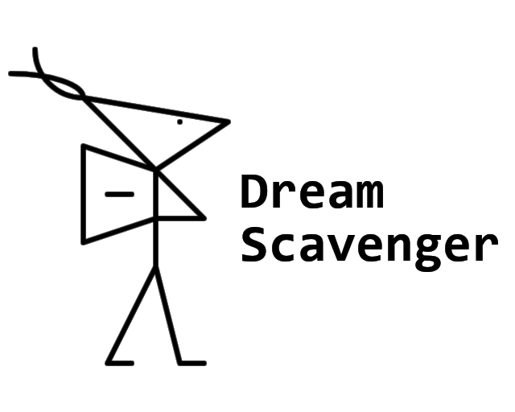

Dream(s) Scavenger
A small video game for a gamejam Ludum Dare; a text story about a Dream(s) Scavenger, a wanderer who collects particles that resonate in his soul. Through these pieces, he wants to "collect themselves" together.

2025-10-06: first version (for the gamejam)
: metaeye :